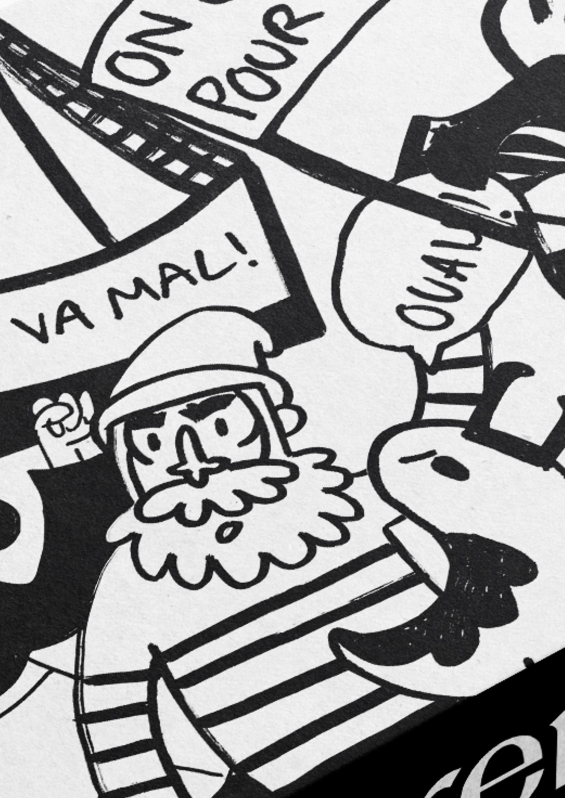
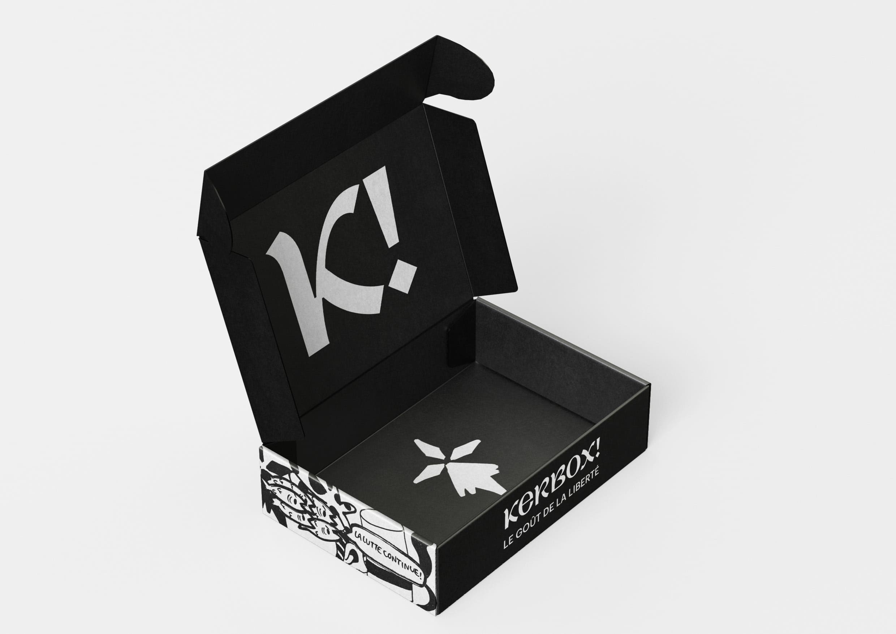

« Demat » dear Bretons and friends of Brittany! Are you convinced that this beautiful region deserves to shine by itself? That it deserves to be independent? We share your vision! Support the association AR FALZ and the artisans of this unique salty by subscribing to KERBOX ! Every month, discover or rediscover delicious dishes, as well as talented Breton illustrators and participate in the establishment of a strong and independent Brittany! Finish your galette, put on your raincoat, and join us on Instagram @KERBOX !
Workshop with Studio M/B. In collaboration with Inès Davodeau and Tim Vanhill.

